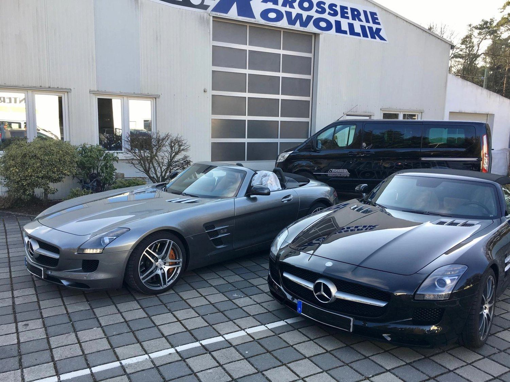
Leistungen
Karosserie und Lack –so individuell wie Sie.
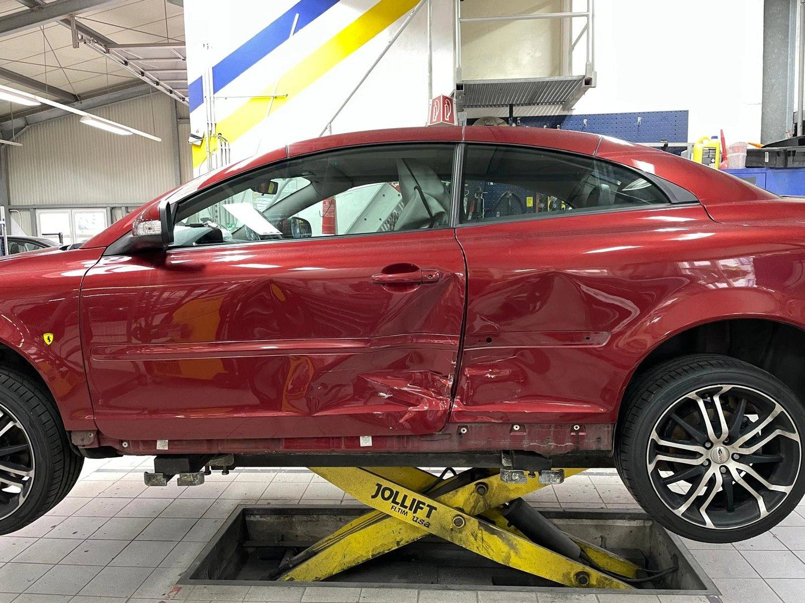
Unfallinstandsetzung
Nach einem Schaden bringen wir Ihr Fahrzeug fachgerecht in den Originalzustand zurück – Karosserie, Lack, Teile und Technik aus einer Hand.
- Karosserie- und Lackierarbeiten
- Austausch beschädigter Teile
- Prüfung von Fahrwerk und Elektronik
- Unterstützung bei der Abwicklung mit der Versicherung
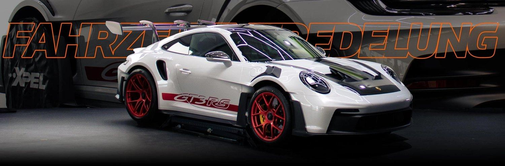
Fahrzeugveredelung
Mehr Glanz, mehr Charakter: Wir veredeln Lack, Felgen und Details, bis Ihr Auto besser aussieht als am ersten Tag.
- Optische Aufwertung
- Felgenveredelung
- Politur und Lackkorrektur
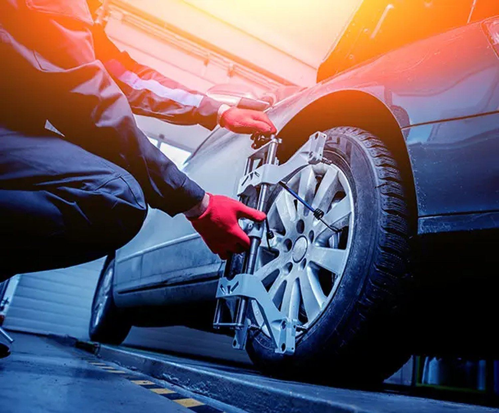
Achsvermessung
Spur, Sturz und Nachlauf werden mit moderner Messtechnik geprüft und bei Bedarf exakt auf Herstellerwerte eingestellt.
- Vermessung von Spur, Sturz und Nachlauf
- Einstellung nach Herstellervorgabe
- Weniger Reifenverschleiß, sauberer Geradeauslauf
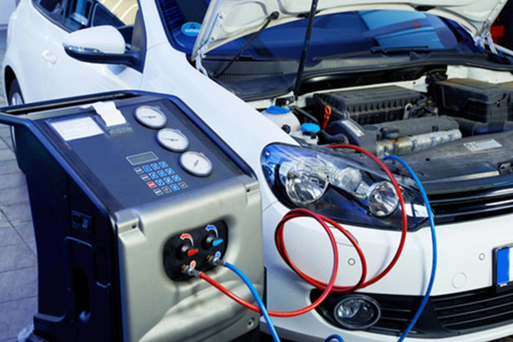
Klimaservice
Damit es im Sommer kühl und im Winter klar bleibt: Wir prüfen, befüllen und desinfizieren Ihre Klimaanlage.
- Dichtheits-, Funktions- und Leistungsprüfung
- Kältemittel nach Herstellerangaben
- Innenraumfilter-Wechsel
- Desinfektion gegen Keime und Gerüche
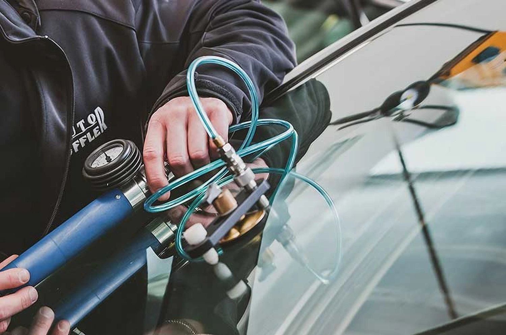
Autoglasreparatur
Steinschlag? Wir bewerten den Schaden schnell, reparieren kleine Schäden per Harz-Verfahren und tauschen große Scheiben komplett.
- Steinschlagreparatur im Harz-Verfahren
- Scheibentausch bei großen Rissen
- Kalibrierung der Assistenzsysteme (ADAS)
- Material nach Herstellervorgabe
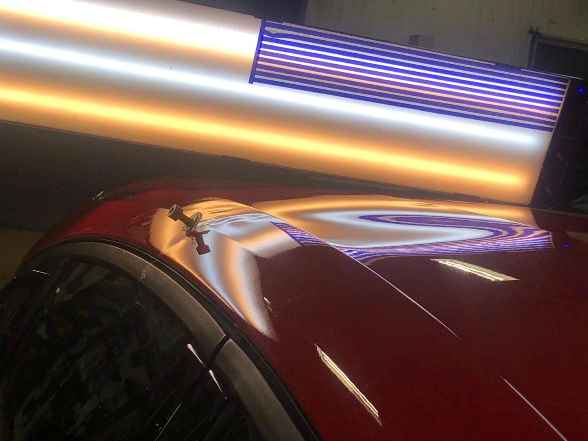
Moderne Dellentechnik
Smart Repair ohne neuen Lack: Beulen und Hagelschäden drücken wir mit Spezialwerkzeug heraus – oft in wenigen Stunden.
- Ausbeulen ohne Lackieren
- Hagelschaden-Beseitigung
- Originallack bleibt erhalten
- Oft in wenigen Stunden erledigt
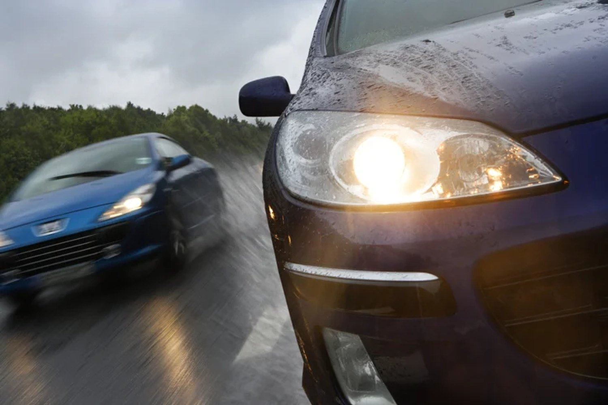
Scheinwerfereinstellung
Richtig sehen und gesehen werden: Wir prüfen und stellen Abblend- und Fernlicht exakt ein – auch adaptive Systeme.
- Einstellung von Abblend- und Fernlicht
- Prüfung von Lichtverteilung und Helligkeit
- Funktionstest adaptiver Scheinwerfer
- Dokumentiert nach Herstellervorgabe
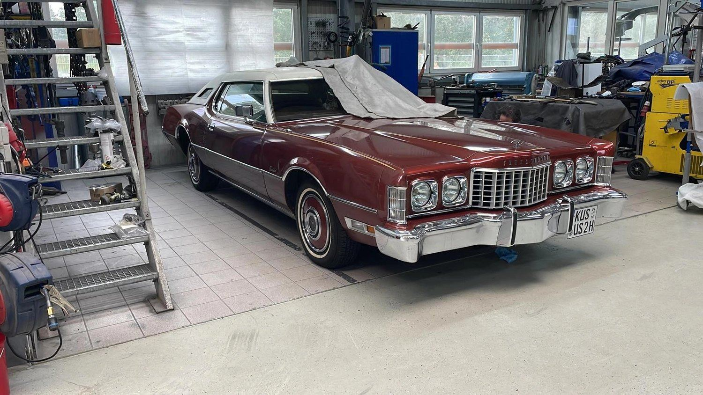
Oldtimerrestauration
Werterhalt mit Gefühl: Wir restaurieren Klassiker originalgetreu oder mit behutsamen Upgrades – traditionelles Handwerk trifft moderne Technik.
- Originalzustand oder behutsames Upgrade
- Karosserie, Blech und Lack
- Erfahrene Restauratoren
- Werterhalt und Wertsteigerung
Und außerdem
Weitere Dienstleistungen.
Wir verstehen uns als Full-Service-Partner – auch über unser Partnernetzwerk. Tippen Sie eine Leistung an und fragen Sie direkt per WhatsApp.
Moderne Unfallinstandsetzung→
Richtbankarbeiten→
Schweißarbeiten→- Reifenservice→
- Behebung von Rostschäden→
Karosserie cleanen→
Tieferlegung→
Flügeltüren→
Auspuffanlagen→- Komplettumbauten→
- Einzelanfertigungen→
- Radläufe→
- Bördeln & Verbreitern→
- Felgen & Reifen→
Beleuchtung→- Und vieles mehr→